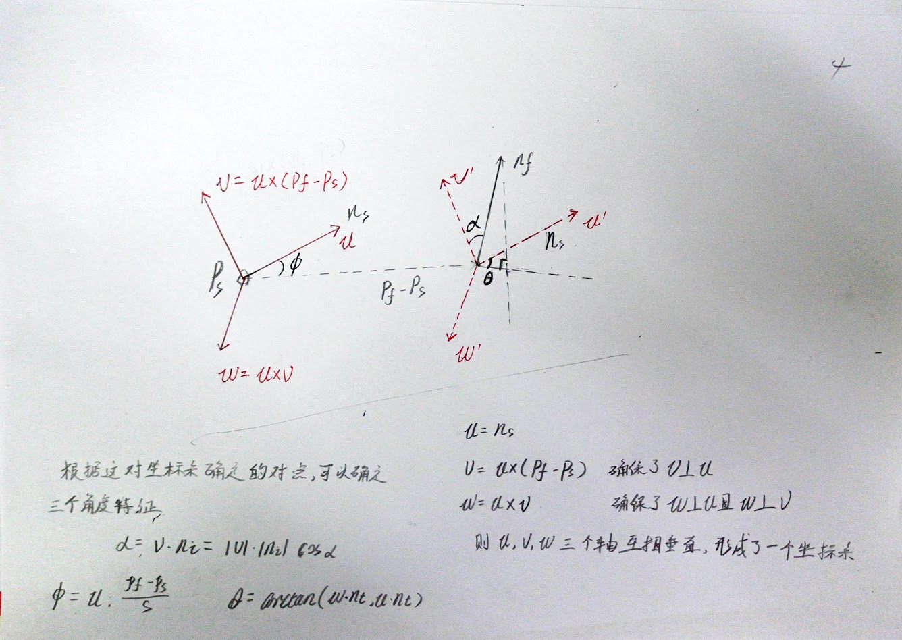

随着点特征表示的发展，围绕特定点的几何图形表示的表面法线和曲率估计有一些基础。虽然它们非常快速并且容易计算，但是无法捕获太多细节，因为它们仅仅使用几个值来近似点的k邻域的几何形状，这就导致了大多数场景将包含许多具有相同或非常相似的特征值的点，从而建少了他们的信息特征。然而大部分场景中包含许多特征点，这些特征点有相同的或者非常相近的特征值，因此采用点特征表示法，其直接结果就减少了全局的特征信息。
PFH的计算依赖于表面法线的估计，应该首先具备前面法线估计的基础。
基础理论
PFH公式的目的是通过值的多维直方图来概括点周围的平均曲率，从而对点的k邻域几何特性进行编码。此高维空间为特征提供了有意义的签名，对于下层表面的6D姿势不变，并且可以很好地应对附近存在的不同采样密度或噪声水平。
PFH表示基于k邻域中的点与其估计的表面法线之间的关系。简而言之，他试图通过考虑法线方向之间的所有相互作用来尽可能地捕获采样部分的表面变化。因此，最终的超空间取决于每个点的表面法线估计的精确度（法线估计的好坏程度）。

PFH计算的影响区域
上图展示了查询点Pq的PFH计算的影响区域图，该查询点用红色标记并放置在半径为r的圆和所有k个邻居(与Pq距离小于3D球体半径r的点)的中间完全互联成网格。最终的PFH描述符被计算为邻域中所有对点之间的关系直方图，因此计算复杂度为O(k^2)（计算复杂度，不包括低阶项和首项的系数，比如–5n^3+2n的复杂度表示为O(n^3)）
为了计算两个点pi和pj及其关联的法线Ni和之间的相对差Nj，我们在其中定义了一个固定的坐标新。

关于坐标系的建立和角度特征的得出
其中d为点对的欧式距离，则（alpha, phi, heta, d）就可将两个点的坐标和法线共12个值(坐标值xyz2+法线xyz2=12)简化为4个值。
要估计一点对的PFH四元组，则调用以下代码
1
2
3
| computePairFeatures (const Eigen::Vector4f &p1, const Eigen::Vector4f &n1,
const Eigen::Vector4f &p2, const Eigen::Vector4f &n2,
float &f1, float &f2, float &f3, float &f4);
|
为表示查询点的最终PFH，所有的四元组会以某种统计的方式放进直方图中，这个过程首先把每个特征值范围划分为b个子区间，并统计落在子区间的点数目，因为四分之三的特征在上述中为法线的角度计量，在三角化元上可以将他们的参数值非常容易地归一到相同的区间内。
一个统计的例子:把每个特征区间划分成等分的相同数目，为此在完全关联的空间内创建有b个区间的直方图。在这个空间中，一个直方图中某一个区间统计个数的增一对应一个点的四个特征值。在某些情况下，第四个特征量d通常由机器人捕获的2.5D数据集中并不重要，因为临近点的距离从视点开始是递增的，而并非不变的，在扫描中局部点密度影响特征时，实践证明省略d是有益的。
1
2
3
4
5
6
7
8
9
10
11
12
13
14
15
16
17
18
19
20
21
22
23
24
25
26
27
28
29
30
31
32
33
34
35
36
37
| #include <iostream>
#include <pcl/features/normal_3d.h>
#include <pcl/point_types.h>
#include <pcl/features/pfh.h>
#include <pcl/io/pcd_io.h>
#include <pcl/io/io.h>
int main() {
//读取点云数据
pcl::PointCloud<pcl::PointXYZ>::Ptr cloud(new pcl::PointCloud<pcl::PointXYZ>);
pcl::io::loadPCDFile("bunny.pcd",*cloud);
//计算法线
pcl::PointCloud<pcl::Normal>::Ptr normals(new pcl::PointCloud<pcl::Normal>);
pcl::search::KdTree<pcl::PointXYZ>::Ptr kdtree(new pcl::search::KdTree<pcl::PointXYZ>);
pcl::NormalEstimation<pcl::PointXYZ,pcl::Normal> ne;
ne.setRadiusSearch(0.03);
ne.setInputCloud(cloud);//输入的点云
ne.compute(*normals);//计算法线
//计算点特征直方图
pcl::PFHEstimation<pcl::PointXYZ,pcl::Normal,pcl::PFHSignature125> pfh;
pfh.setInputCloud(cloud);
pfh.setInputNormals(normals);
pfh.setSearchMethod(kdtree);
pcl::PointCloud<pcl::PFHSignature125>::Ptr pfhs(new pcl::PointCloud<pcl::PFHSignature125>);//接受结果的对象
pfh.setRadiusSearch(0.05);//次数使用的半径必须要大于估计表面法线时使用的半径
for (int i = 0; i < normals->size(); i++)
{
if (!pcl::isFinite<pcl::Normal>((*normals)[i]))
{
PCL_WARN("normals[%d] is not finite\n", i);
}
}
pfh.compute(*pfhs);
std::cout<<"compute finished"<<std::endl;
return 0;
}
|
PFHEstimation类在程序内部执行的实际计算为：
对点云P中的每个点p
（1）得到p点的最近邻元素
（2）对于邻域内的每点对，计算其三个角度特征参数值
（3）将所有结果统计到一个输出直方图中